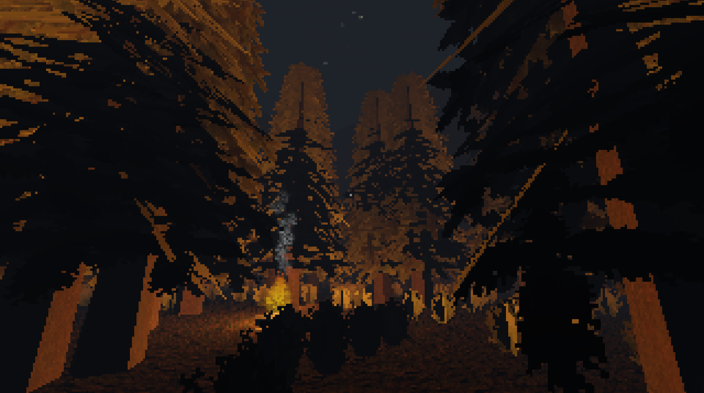

Matt Dembiczak
RGB, 2023-2024
HTML, CSS, JavaScript, Three.js
RGB is an interactive exploration into how computers store and interpret images as data. It is also an investigation of websites as a form of digital installation. When interacting with RGB, players are forced to think like a computer, to deconstruct digital media into its pixels consisting of the only three colors computers know: red, green, and blue.
Technical Process
Screens display media through pixels, individual points of light that combine red, green, and blue additively to display 16,777,216 possible colors. RGB examines each of these pixels in an image, comparing its red, green, and blue values, or RGB values. The work features three 3D panes, one corresponding to each of these colors. In each pane, every pixel’s RGB values are compared. If the corresponding color is dominant, then that pixel is tinted and displayed; otherwise, it is transparent. Interacting with each slider adjusts the bias for its corresponding color.
Interactions
- Click the central image pane to toggle pane alignment.
- Click the outer image panes when unaligned to navigate three-dimensionally.
- Drag the sliders to adjust the red, green, and blue bias.
- Click the refresh button to receive a random image.
- Click the upload button to upload an image from your device.
Other Works by Matt Dembiczak
Fakebook, 2022
C++, openFrameworks
Fakebook is an equivocal social media application that utilizes AI to randomly generate an infinite quantity of images for the player to consume, adapting to their behavior over time. It does this through an algorithm that first generates random keywords, then uses the OpenAI DALL-E 2 API to generate an image with those keywords, and finally analyzes the player's behavior to reutilize keywords that promote engagement. The work itself is an experiment to see if artificial content can effectively captivate a user. It also deals with themes of social media addiction and consumption.
Efedor Station, 2023
Godot, Blender
Efedor Station is a 3D exploration game set in an enclosed forest environment. The player must collect golden coins scattered throughout the world, chopping down trees to use the logs as a fuel source to light their way. The game is a commentary on the nature of capitalism and how it drives the act of deforestation, as well as an analysis of player behavior.
Textural Threshold Hair Salon: Dreadlock, 2023
Python, HTML, CSS

Textural Threshold Hair Salon: Dreadlock was a technical collaboration with professors Felecia Davis, Huijuan Xu, and Shu Zhao. It was an interactive installation on display at Venice Architecture Biennale 2023. The work allowed users to sit in a chair and have a screenshot taken of the back of their head, which was then compared to a database of hair types to display positive and negative matches. I was responsible for automating the exhibition, creating a program that interfaced with the various hardware and software components to provide a seamless user experience.